۱معرفی
تیکتچی یک سیستم کامل پشتیبانی برای وردپرس است. مشتریها از «حساب کاربری» یا هر صفحه دلخواه تیکت ثبت میکنند و تیم شما همه درخواستها را در یک پنل مستقل و حرفهای پاسخ میدهد.
چه چیزهایی در اختیار دارید؟
- صندوق پشتیبانی: همه تیکتها در یک صفحه، با نماهای آماده، جستجو، یادداشت داخلی و پاسخهای آماده.
- تیم و تخصیص: کارشناس پشتیبانی، سپردن تیکت به افراد و تقسیم خودکار تیکتها.
- زمان پاسخگویی (SLA): مهلت پاسخ و حل تیکت بر اساس اولویت، با هشدار تأخیر.
- اتوماسیون: قانونهایی که کارهای تکراری را خودکار انجام میدهند.
- گزارشها: عملکرد تیم، زمان پاسخ، رضایت مشتری و ساعات پرترافیک.
- پایگاه دانش: مرکز راهنما برای مشتریها و پیشنهاد مقاله هنگام ثبت تیکت.
- اعلانها: زنگوله درون پنل، ایمیل و پیامک.
پیشنیازها
- وردپرس ۵.۳ یا بالاتر و PHP ۷.۴ یا بالاتر.
- ionCube Loader روی هاست فعال باشد (برای فایل لایسنس؛ بیشتر هاستها بهطور پیشفرض دارند).
- ووکامرس اختیاری است؛ بدون آن از شورتکد
[tickets]استفاده کنید.
۲نصب و فعالسازی
نصب تازه
- در پیشخوان وردپرس به افزونهها › افزودن › بارگذاری افزونه بروید و فایل zip تیکتچی را انتخاب کنید.
- روی نصب و سپس فعالسازی کلیک کنید. جدولهای افزونه خودکار ساخته میشوند.
- کد لایسنس خریداریشده از راستچین را در صفحه فعالسازی لایسنس وارد کنید.
- در منوی وردپرس آیتم «تیکتچی» اضافه میشود. روی آن کلیک کنید تا پنل باز شود.
ارتقا از نسخههای قبلی
- از سایت نسخه پشتیبان بگیرید (پیشنهاد همیشگی).
- نسخه قبلی تیکتچی را غیرفعال و سپس حذف کنید. تیکتها، پاسخها و تنظیمات در پایگاه داده باقی میمانند.
- نسخه جدید را نصب و فعال کنید. پایگاه داده خودکار بهروزرسانی میشود و همه اطلاعات قبلی سر جایشان هستند.
اگر نسخه قدیمی و جدید همزمان فعال باشند، نسخه جدید بدون خطا کنار میکشد و در پیشخوان پیام راهنما نشان میدهد. کافی است نسخه قدیمی را غیرفعال کنید.
۳راهاندازی سریع (۱۰ دقیقه)
با این پنج گام سیستم پشتیبانی شما آماده کار است:
- دپارتمانها را بسازید: در تیم و دپارتمانها بخشهایی مثل «پشتیبانی فنی»، «مالی» و «فروش» را تعریف کنید و برای هرکدام کارشناس پاسخگو انتخاب کنید. جزئیات
- رنگ برند را تنظیم کنید: در تنظیمات › ظاهر و برند رنگ اصلی سایتتان را انتخاب کنید. جزئیات
- پاسخهای آماده بنویسید: در تنظیمات › پاسخهای آماده متنهای پرتکرار را اضافه کنید.
- تخصیص خودکار را روشن کنید: در تنظیمات › تیم و تخصیص حالت «نوبتی» را انتخاب کنید تا تیکتها بین کارشناسان تقسیم شوند.
- یک تیکت آزمایشی ثبت کنید: با یک حساب مشتری به حساب کاربری › تیکتهای پشتیبانی بروید و تیکت بفرستید. تیکت فوراً در صندوق پشتیبانی دیده میشود.
بدون ووکامرس؟ یک برگه جدید بسازید، شورتکد [tickets] را در آن قرار دهید و لینکش را در منوی سایت بگذارید.
۴آشنایی با پنل مدیریت
پنل تیکتچی تمامصفحه و جدا از پیشخوان وردپرس اجرا میشود تا تیم شما بدون شلوغی روی پشتیبانی تمرکز کند.
هدر پنل
- منوی اصلی: داشبورد، صندوق پشتیبانی، گزارشها، اتوماسیون، تیم و دپارتمانها، تنظیمات. کارشناسها فقط «داشبورد» و «صندوق پشتیبانی» را میبینند.
- جستجوی سریع: با Ctrl + K (در مک ⌘ + K) از هر صفحه، تیکت با شماره یا عنوان، مشتری با نام یا ایمیل و صفحههای پنل را پیدا کنید.
- زنگوله اعلانها: تیکت جدید، پاسخ مشتری، تیکت سپردهشده به شما و هشدار تأخیر.
- حالت تاریک: با دکمه ماه/خورشید؛ انتخاب شما به خاطر سپرده میشود.
- منوی کاربر: تغییر آواتار، بازگشت به پیشخوان وردپرس، نمایش سایت، ویرایش پروفایل و خروج.
- دکمه بازگشت: فلش گوشه هدر شما را به پیشخوان وردپرس برمیگرداند.
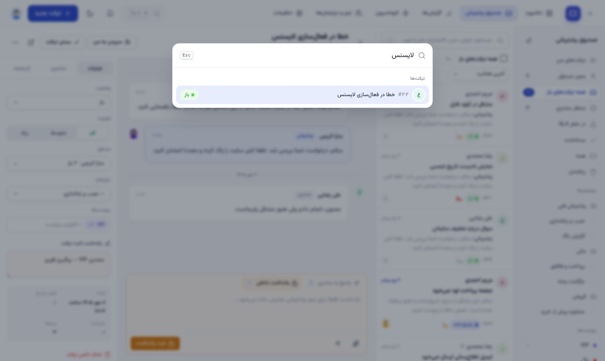
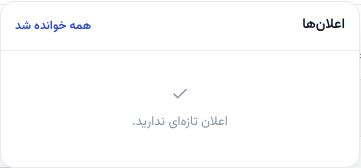
۵داشبورد
نمای کلی وضعیت پشتیبانی در ۳۰ روز اخیر:
- تیکتهای جدید، تیکتهای در انتظار پاسخ (و تعداد فوریها)، میانگین زمان اولین پاسخ و رضایت کاربران.
- نمودار تیکتهای ثبتشده در هر روز؛ با نگه داشتن ماوس روی هر ستون جزئیات آن روز نمایش داده میشود و با «نمایش جدول دادهها» اعداد دقیق را میبینید.
- توزیع وضعیتها، امتیاز کاربران، پرکارترین دپارتمانها و اولویت تیکتهای فعال.
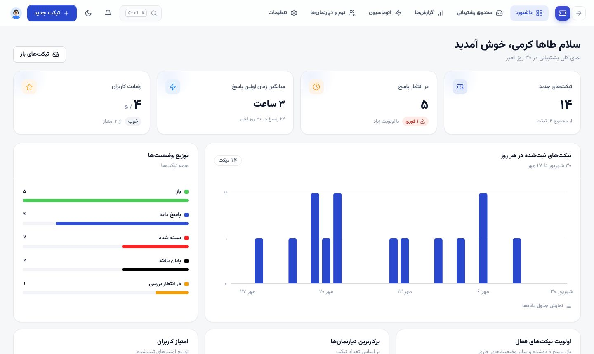
۶صندوق پشتیبانی
محل اصلی کار تیم پشتیبانی. صفحه از سه ستون تشکیل شده است: نماها (راست)، فهرست تیکتها (وسط) و گفتگو (چپ).
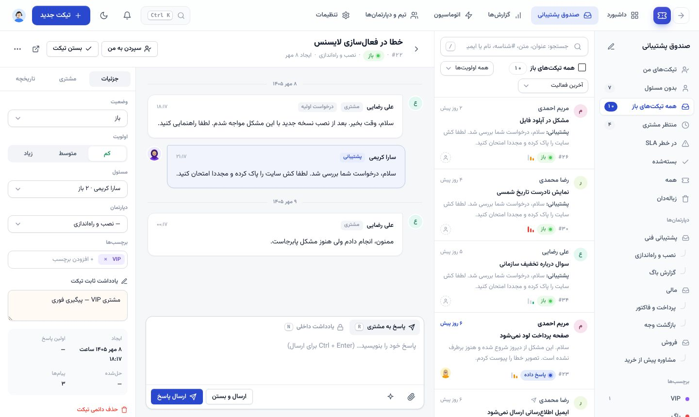
نماها
| نما | چه تیکتهایی را نشان میدهد |
|---|---|
| تیکتهای من | تیکتهای باز که به شما سپرده شدهاند |
| بدون مسئول | تیکتهای باز که هنوز کسی آنها را برنداشته |
| همه تیکتهای باز | همه تیکتهایی که بسته نشدهاند |
| منتظر مشتری | تیکتهایی که پاسخ دادهاید و منتظر جواب مشتری هستند |
| در خطر SLA | تیکتهایی که مهلتشان گذشته یا تا دو ساعت دیگر تمام میشود |
| بستهشده / همه / زبالهدان | آرشیو تیکتها |
زیر نماها، دپارتمانها و برچسبها هم قابل کلیکاند. در لپتاپها این ستون جمع میشود و همین گزینهها از منوی کشویی بالای فهرست در دسترس است.
فهرست تیکتها
- تیکتهایی که آخرین پیامشان از مشتری است پررنگ نمایش داده میشوند؛ یعنی منتظر پاسخ شما هستند.
- در هر ردیف: نام مشتری، عنوان، خلاصه آخرین پیام، وضعیت، اولویت، زمان باقیمانده تا مهلت، برچسبها و آواتار مسئول.
- جستجو در عنوان، متن، شماره تیکت (مثلاً
#۲۴)، نام و ایمیل مشتری. - فیلتر اولویت و مرتبسازی: آخرین فعالیت، قدیمیترین انتظار، تاریخ ایجاد، اولویت، نزدیکترین مهلت.
- فهرست هر ۳۰ ثانیه خودکار بهروز میشود.
پاسخ دادن
- پاسخ به مشتری: متن را بنویسید و «ارسال پاسخ» بزنید (یا Ctrl + Enter). وضعیت تیکت خودکار «پاسخ داده» میشود.
- ارسال و بستن: پاسخ ارسال و تیکت همزمان بسته میشود.
- یادداشت داخلی: تب «یادداشت داخلی» را انتخاب کنید. یادداشتها زرد نمایش داده میشوند و مشتری هرگز آنها را نمیبیند؛ برای هماهنگی تیم یا ثبت اطلاعات.
- پاسخهای آماده: دکمه ستاره کنار پیوست، متنهای آمادهای را که در تنظیمات تعریف کردهاید درج میکند.
- پیوست: با دکمه گیره یا کشیدن فایل روی کادر پاسخ.
- پیشنویس: متن نیمهکاره هر تیکت خودکار ذخیره میشود؛ حتی اگر صفحه را ببندید.
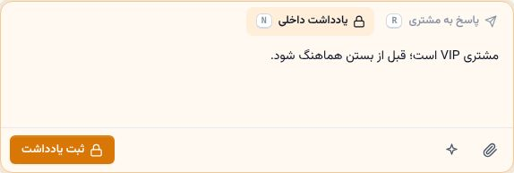
جزئیات، مشتری و تاریخچه
ستون کناری گفتگو سه تب دارد:
- جزئیات: وضعیت، اولویت، مسئول (همراه تعداد تیکتهای باز هر کارشناس)، دپارتمان، برچسبها، یادداشت ثابت تیکت و زمانهای مهم. هر تغییری فوراً ذخیره میشود.
- مشتری: پروفایل کامل مشتری: ایمیل و موبایل، تعداد تیکتها، میانگین رضایت، سفارشها و مبلغ خرید ووکامرس و تیکتهای قبلی.
- تاریخچه: همه اتفاقات تیکت (پاسخها، تغییر وضعیت و اولویت، سپردن، برچسبها، امتیاز، کارهای اتوماسیون) با نام انجامدهنده و زمان.
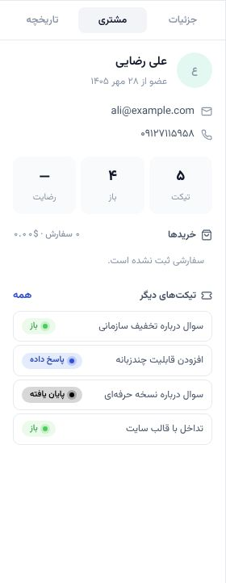
عملیات گروهی
با نگه داشتن ماوس روی هر تیکت، چکباکس انتخاب ظاهر میشود. پس از انتخاب چند تیکت میتوانید همه را یکجا به کارشناسی بسپارید، وضعیتشان را تغییر دهید یا به زبالهدان بفرستید. در زبالهدان امکان بازگردانی و حذف دائمی (فقط مدیر) وجود دارد.
میانبرهای صفحهکلید
| کلید | کار |
|---|---|
| J / K | تیکت بعدی / قبلی |
| R | نوشتن پاسخ |
| N | یادداشت داخلی |
| A | سپردن تیکت به خودم |
| X | انتخاب تیکت جاری برای عملیات گروهی |
| / | رفتن به جستجو |
| Ctrl + Enter | ارسال پاسخ |
| Ctrl + K | جستجوی سریع در همهجا |
| ? | نمایش همه میانبرها |
آدرس هر تیکت قابل اشتراک است؛ کافی است لینک صفحه را برای همکارتان بفرستید تا مستقیم همان تیکت باز شود.
۷ارسال تیکت به کاربر
گاهی پشتیبانی باید گفتگو را شروع کند (اطلاعرسانی، پیگیری سفارش و…). از دکمه «تیکت جدید» در هدر:
- یک یا چند گیرنده را با تایپ نام یا ایمیل انتخاب کنید.
- عنوان، دپارتمان، وضعیت و اولویت را تعیین کنید.
- متن پیام را بنویسید و در صورت نیاز فایل پیوست کنید.
- «ارسال تیکت» را بزنید. برای هر گیرنده یک تیکت جداگانه ساخته میشود.
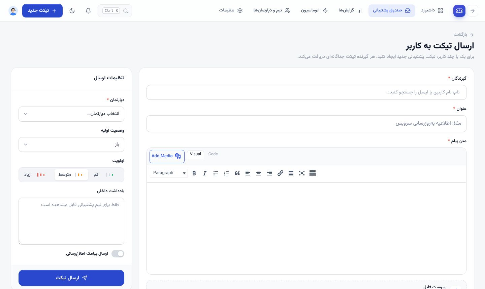
۸تیم، دپارتمانها و برچسبها
ساخت دپارتمان
- به تیم و دپارتمانها بروید.
- در فرم «دپارتمان جدید» عنوان را بنویسید. برای زیرمجموعه (مثلاً «نصب و راهاندازی» زیر «پشتیبانی فنی»)، دپارتمان والد را انتخاب کنید.
- در فیلد کارشناس پاسخگو کاربرانی را که به این بخش پاسخ میدهند انتخاب کنید.
- توضیح کوتاه (اختیاری) هنگام انتخاب دپارتمان به مشتری نمایش داده میشود.
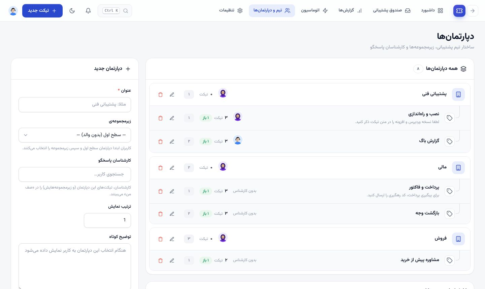
افزودن کارشناس پشتیبانی
دو راه وجود دارد:
- نقش «کارشناس پشتیبانی»: در کاربران › افزودن (پیشخوان وردپرس) کاربر جدید بسازید و نقش «کارشناس پشتیبانی» را انتخاب کنید. این نقش فقط به پنل تیکتچی دسترسی دارد و پس از ورود مستقیم به صندوق پشتیبانی میرود.
- پاسخگوی دپارتمان: هر کاربری که در یک دپارتمان بهعنوان کارشناس پاسخگو انتخاب شود، خودکار دسترسی کارشناس میگیرد.
| نقش | دسترسی |
|---|---|
| مدیر سایت / مدیر فروشگاه | همه بخشها: صندوق، گزارشها، اتوماسیون، تیم، تنظیمات، حذف دائمی |
| کارشناس پشتیبانی | داشبورد و صندوق پشتیبانی؛ بهطور پیشفرض فقط تیکتهای دپارتمانهای خودش و تیکتهایی که به او سپرده شده |
اگر میخواهید همه کارشناسها همه تیکتها را ببینند، در تنظیمات › تیم و تخصیص گزینه «همه تیکتها» را انتخاب کنید.
تخصیص تیکت
- دستی: از تب «جزئیات» در صندوق، یا دکمه «سپردن به من».
- نوبتی: تیکتهای جدید بهترتیب بین کارشناسان همان دپارتمان تقسیم میشوند.
- کمکارترین: تیکت جدید به کارشناسی میرسد که کمترین تیکت باز را دارد.
حالت تخصیص در تنظیمات › تیم و تخصیص انتخاب میشود.
برچسبها
برچسبها (مثلاً «VIP»، «باگ»، «فوری») برای دستهبندی تیکتها هستند. در پایین صفحه تیم و دپارتمانها برچسب بسازید، نام و رنگش را تغییر دهید یا حذفش کنید. داخل هر تیکت هم با تایپ نام و زدن Enter برچسب اضافه میشود؛ اگر وجود نداشته باشد ساخته میشود.
۹زمان پاسخگویی (SLA)
SLA تعهد زمانی شما به مشتری است: «به تیکتهای فوری حداکثر ظرف ۲ ساعت پاسخ میدهیم». تیکتچی برای هر تیکت دو مهلت تعیین میکند:
- مهلت اولین پاسخ: تا اولین پاسخ پشتیبانی.
- مهلت حل: تا بسته شدن تیکت.
مقادیر پیشفرض (قابل تغییر در تنظیمات › SLA و زمان پاسخ):
| اولویت | اولین پاسخ | حل تیکت |
|---|---|---|
| زیاد | ۲ ساعت | ۲۴ ساعت |
| متوسط | ۸ ساعت | ۴۸ ساعت |
| کم | ۲۴ ساعت | ۹۶ ساعت |
- با فعال کردن ساعات کاری، مهلتها فقط در روزها و ساعات کاری شما شمرده میشوند (مثلاً شنبه تا چهارشنبه، ۹ تا ۱۷).
- زمان باقیمانده در فهرست تیکتها نمایش داده میشود: آبی (در موعد)، نارنجی (نزدیک مهلت)، قرمز (گذشته از مهلت)، سبز (رعایت شد).
- با عبور از مهلت، اعلان و ایمیل هشدار برای مسئول تیکت (یا مدیران) ارسال میشود.
- با تغییر اولویت تیکت، مهلتها دوباره محاسبه میشوند.
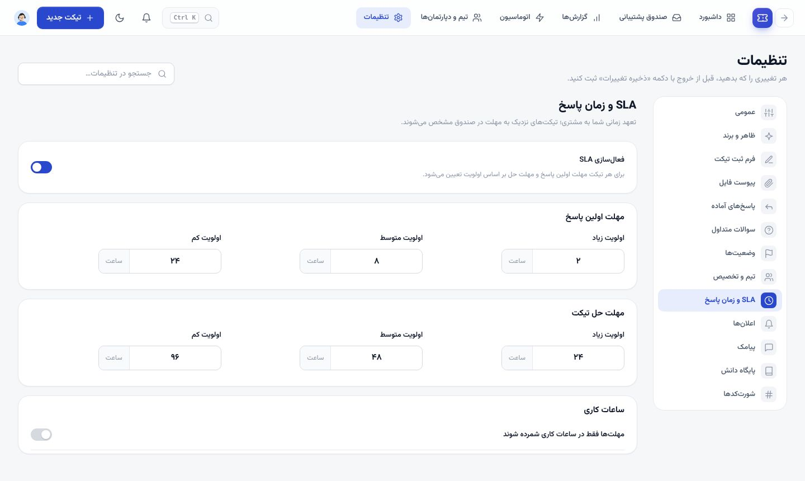
۱۰اتوماسیون
اتوماسیون کارهای تکراری را از دوش تیم برمیدارد. هر قانون سه بخش دارد: وقتی (رویداد)، اگر (شرطها؛ اختیاری) و آنگاه (کارها).
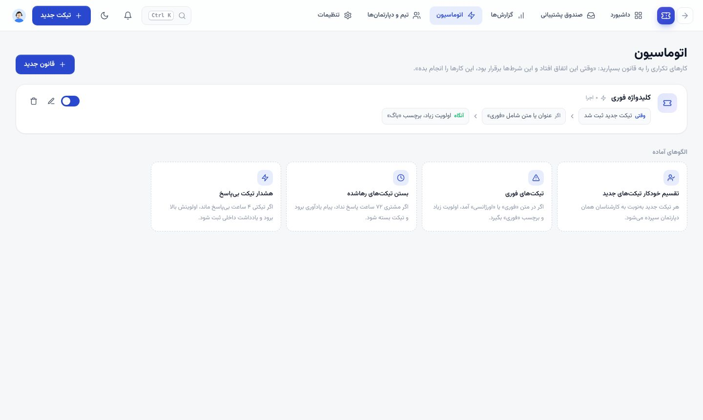
ساخت قانون
- به اتوماسیون بروید و «قانون جدید» بزنید، یا روی یکی از الگوهای آماده کلیک کنید.
- نام قانون و رویداد را انتخاب کنید.
- در صورت نیاز شرط اضافه کنید؛ قانون فقط وقتی اجرا میشود که همه شرطها برقرار باشند.
- یک یا چند کار تعریف کنید و «ذخیره قانون» را بزنید.
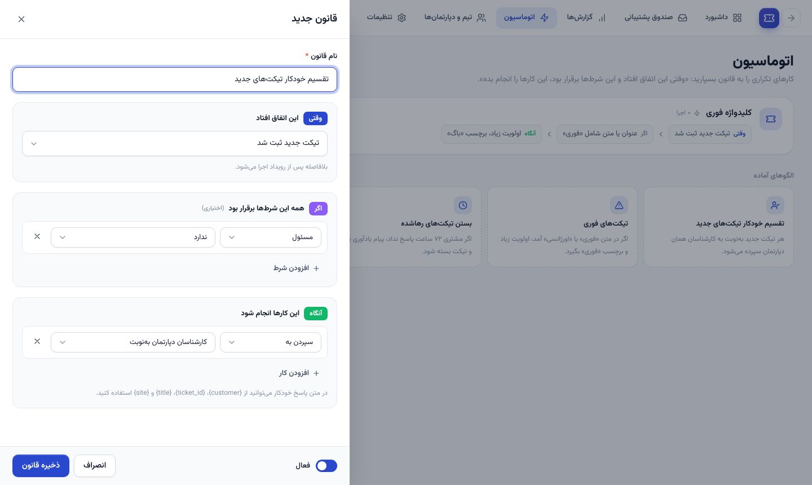
رویدادها، شرطها و کارها
| بخش | گزینهها |
|---|---|
| وقتی | تیکت جدید ثبت شد · مشتری پاسخ داد · پشتیبانی پاسخ داد · وضعیت تیکت تغییر کرد · تیکت منتظر پاسخ پشتیبانی ماند · تیکت منتظر پاسخ مشتری ماند |
| اگر | دپارتمان · اولویت · وضعیت · برچسب · کلمه در عنوان یا متن · مسئول دارد/ندارد · مشتری خرید دارد · مدت انتظار (ساعت) |
| آنگاه | سپردن (به فرد، نوبتی یا کمکارترین) · تغییر اولویت · تغییر وضعیت · افزودن برچسب · یادداشت داخلی · پاسخ خودکار به مشتری · اطلاع به کارشناس |
در متن پاسخ خودکار میتوانید از این متغیرها استفاده کنید: {customer} نام مشتری، {ticket_id} شماره تیکت، {title} عنوان، {site} نام سایت.
نمونههای کاربردی
- تیکتهای فوری: وقتی تیکت جدید ثبت شد، اگر متن شامل «فوری» بود ← اولویت زیاد + برچسب «فوری».
- بستن تیکتهای رهاشده: وقتی تیکت ۷۲ ساعت منتظر پاسخ مشتری ماند ← پاسخ خودکار یادآوری + وضعیت بسته.
- مشتریان VIP: وقتی تیکت جدید ثبت شد، اگر مشتری خرید دارد ← برچسب VIP + سپردن به کارشناس ارشد.
قانونهای زمانی («منتظر … ماند») هر ساعت بررسی میشوند و برای هر تیکت فقط یک بار اجرا میشوند. قانونها باعث اجرای زنجیرهای قانونهای دیگر نمیشوند.
۱۱گزارشها
بازه زمانی را انتخاب کنید (۷، ۳۰ یا ۹۰ روز، این ماه یا بازه دلخواه). همه اعداد با بازه قبلیِ هماندازه مقایسه میشوند.
- شاخصها: تیکتهای جدید، حلشده، زمان اولین پاسخ، زمان حل، درصد رعایت SLA، رضایت مشتری، تعداد پاسخها.
- روند روزانه: نمودار تیکتهای ثبتشده و حلشده.
- عملکرد کارشناسان: تیکتهای سپردهشده، حلشده، پاسخها، زمان اولین پاسخ و رضایت هر نفر.
- رضایت مشتری: توزیع امتیازها و درصد مشتریان راضی.
- ساعات پرترافیک: نقشه حرارتی روزهای هفته و ساعات شبانهروز؛ برای برنامهریزی شیفتها.
- خروجی CSV: فهرست تیکتهای بازه انتخابی برای اکسل.
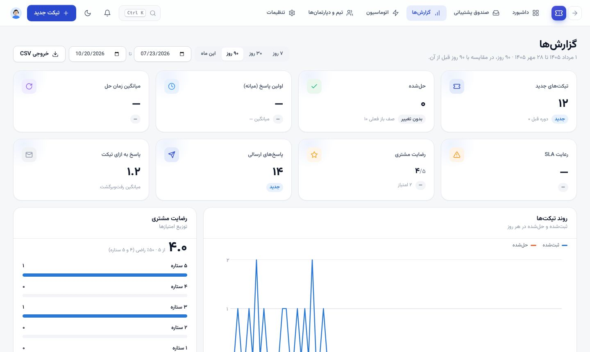
۱۲پایگاه دانش و مرکز راهنما
با پایگاه دانش، مشتریها جواب سوالهای پرتکرار را خودشان پیدا میکنند و تعداد تیکتها کم میشود.
- در پیشخوان وردپرس از منوی پایگاه دانش مقاله بنویسید و دستهبندی کنید (مثل نوشتن یک نوشته معمولی).
- یک برگه جدید (مثلاً «مرکز راهنما») بسازید و شورتکد
[ticketchi_kb]را در آن قرار دهید. - لینک این برگه را در منوی سایت بگذارید.
- مرکز راهنما شامل جستجو، دستهها و مقالههای تازه است و در پایان دکمه «ثبت تیکت پشتیبانی» دارد.
- زیر هر مقاله کادر «جوابتان را پیدا نکردید؟» با لینک ثبت تیکت نمایش داده میشود.
- پیشنهاد هوشمند: هنگام نوشتن عنوان تیکت، مقالههای مرتبط به مشتری پیشنهاد میشوند.
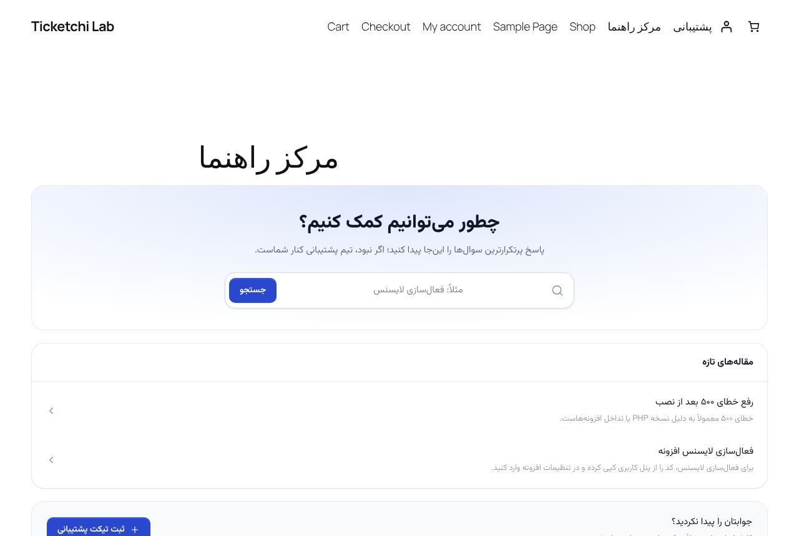
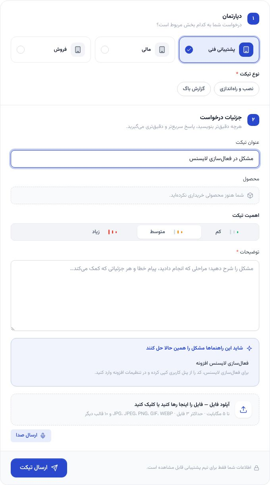
اگر نامک آدرس مقالهها را در تنظیمات تغییر دادید و صفحه مقاله «یافت نشد» نشان داد، یک بار به تنظیمات › پیوندهای یکتا وردپرس بروید و «ذخیره تغییرات» را بزنید.
۱۳اعلانها، ایمیل و پیامک
اعلان درون پنل
زنگوله هدر برای تیکت جدید (کارشناسان دپارتمان)، پاسخ مشتری (مسئول تیکت)، سپرده شدن تیکت و عبور از مهلت SLA اعلان میدهد. با کلیک روی هر اعلان مستقیم به تیکت میروید.
ایمیل
- به مشتری: تایید ثبت تیکت و اطلاع پاسخ جدید پشتیبانی.
- به تیم: تیکت جدید، پاسخ مشتری، تیکت سپردهشده و هشدار SLA.
- ایمیلها راستچین و با رنگ برند شما ارسال میشوند. نام و ایمیل فرستنده در تنظیمات › اعلانها قابل تغییر است.
برای اطمینان از رسیدن ایمیلها (و نرفتن به پوشه اسپم)، یک افزونه SMTP مثل WP Mail SMTP نصب و تنظیم کنید.
پیامک
- در تنظیمات › پیامک سامانه (ملی پیامک یا کاوهنگار) را انتخاب و اطلاعات حساب را وارد کنید.
- در «فیلد شماره موبایل کاربر» کلیدی را که شماره موبایل در آن ذخیره میشود وارد کنید؛ در ووکامرس معمولاً
billing_phone. - پیامک ثبت تیکت و/یا پیامک پاسخ را فعال و کد الگوی سامانه را وارد کنید.
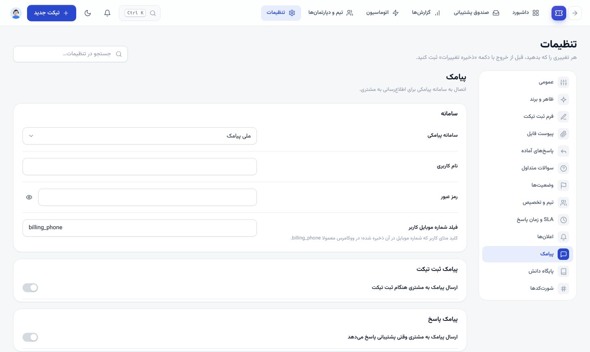
۱۴تنظیمات
تنظیمات در ۱۳ بخش مرتب شدهاند. با کادر جستجو در تنظیمات هر گزینه را سریع پیدا کنید. هر تغییری که بدهید، نوار «تغییرات ذخیرهنشده» پایین صفحه ظاهر میشود؛ با «ذخیره تغییرات» یا Ctrl + S ذخیره کنید.
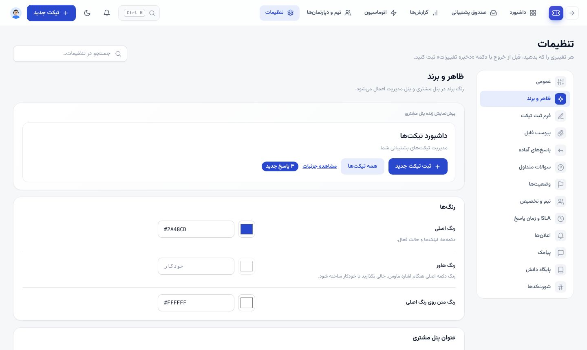
| بخش | چه چیزی را تنظیم میکند |
|---|---|
| عمومی | پیغام بالای فرم ثبت تیکت، پاسخ خودکار پس از ثبت تیکت، امتیازدهی مشتری، بستن خودکار تیکتهای پاسخدادهشده پس از یک هفته |
| ظاهر و برند | رنگ اصلی، رنگ هاور، رنگ متن روی دکمهها، عنوان و توضیح پنل مشتری |
| فرم ثبت تیکت | برچسب فیلدهای فرم، انتخاب محصول ووکامرس و Easy Digital Downloads |
| پیوست فایل | حداکثر حجم، پسوندهای مجاز، آپلود چند فایل و حداکثر تعداد |
| پاسخهای آماده | متنهای پرتکرار برای درج سریع در پاسخها (قابل مرتبسازی با کشیدن) |
| سوالات متداول | نمایش سوالات پرتکرار پیش از فرم ثبت تیکت |
| وضعیتها | رنگ وضعیتهای پیشفرض و ساخت وضعیتهای اختصاصی (مثلاً «در انتظار بررسی فنی») |
| تیم و تخصیص | حالت تخصیص خودکار و محدوده دید کارشناسان |
| SLA و زمان پاسخ | مهلتها برای هر اولویت و ساعات کاری |
| اعلانها | ایمیلهای مشتری و تیم، نام و ایمیل فرستنده |
| پیامک | سامانه پیامکی، پیامک ثبت تیکت و پیامک پاسخ |
| پایگاه دانش | فعالسازی، پیشنهاد مقاله و نامک آدرس مقالهها |
| شورتکدها | شورتکدهای قابل استفاده با دکمه کپی |
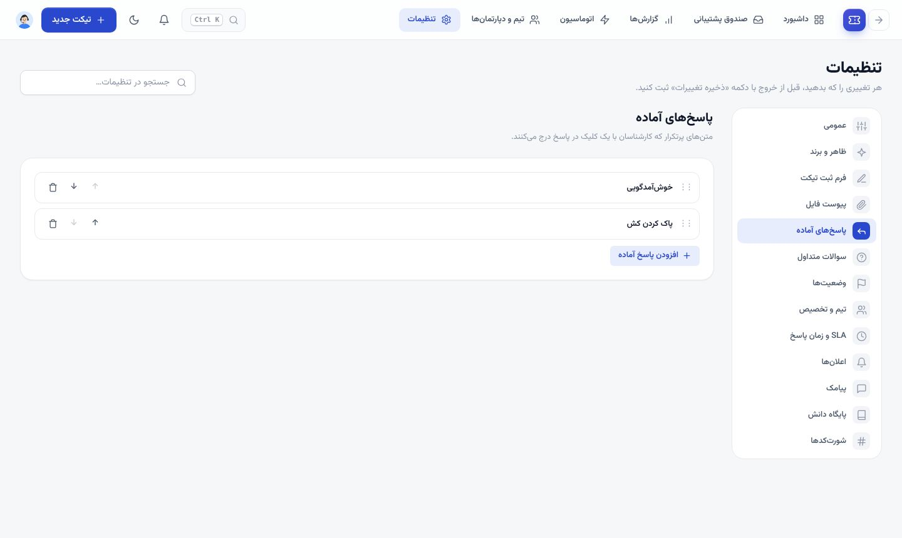
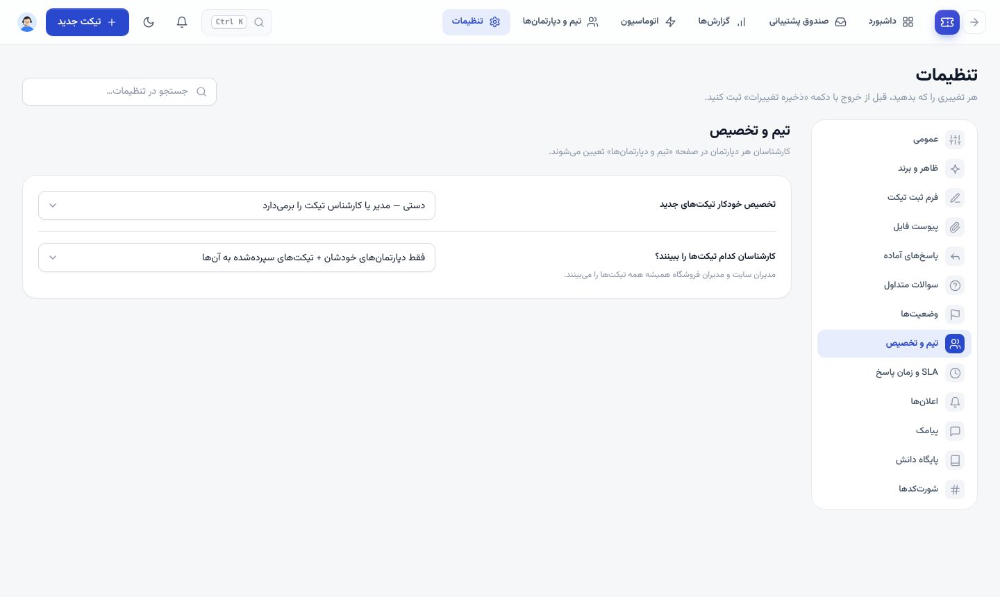
۱۵آواتار کارشناسان
آواتار هر کارشناس کنار پاسخهایش به مشتری و در صندوق پشتیبانی نمایش داده میشود. هر کارشناس بهطور پیشفرض یکی از آواتارهای آماده را دارد.
- در هدر پنل روی آواتار خود کلیک کنید و «تغییر آواتار» را بزنید.
- یکی از آواتارهای آماده را انتخاب کنید، یا با «آپلود عکس» تصویر خودتان را بگذارید (JPG، PNG، WEBP یا GIF تا ۲ مگابایت).
- با «بازگشت به پیشفرض» عکس آپلودشده حذف میشود.
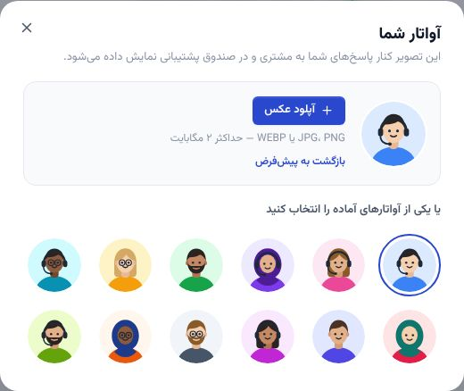
۱۶پنل مشتری
مشتریها از حساب کاربری › تیکتهای پشتیبانی در ووکامرس، یا هر برگهای که شورتکد [tickets] دارد، به پنل دسترسی دارند.
داشبورد مشتری
آمار تیکتها بر اساس وضعیت، فهرست تیکتها با فیلتر وضعیت، اولویت و نوع (ارسالی/دریافتی)، و دکمه «ثبت تیکت جدید».
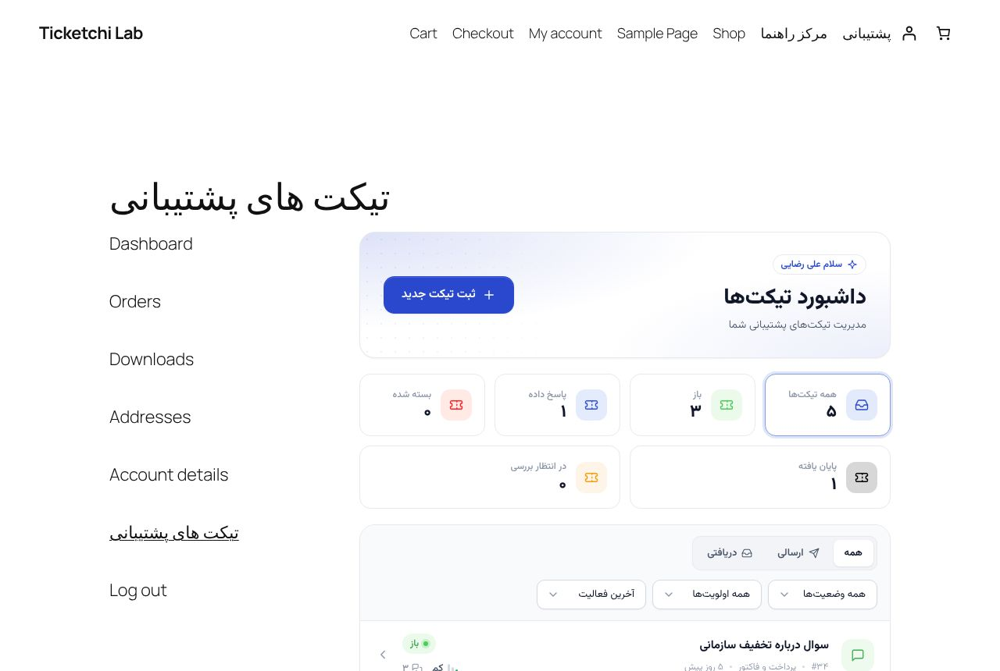
ثبت تیکت
- اگر فعال باشد، ابتدا سوالات متداول نمایش داده میشود.
- مشتری دپارتمان (و در صورت وجود، زیرمجموعه) را انتخاب میکند.
- عنوان، محصول مرتبط، اولویت و توضیحات را مینویسد. مقالههای مرتبط پایگاه دانش پیشنهاد میشوند.
- میتواند فایل پیوست کند یا پیام صوتی ضبط کند.
گفتگو
- گفتگوی چتگونه با پشتیبانی؛ پاسخها بدون بارگذاری دوباره صفحه ارسال میشوند.
- مشتری میتواند با سوییچ «مشکلم حل شد» تیکت را ببندد.
- پس از پاسخ پشتیبانی، امکان امتیازدهی ۱ تا ۵ ستاره وجود دارد.
- یادداشتهای داخلی تیم هرگز به مشتری نمایش داده نمیشوند.
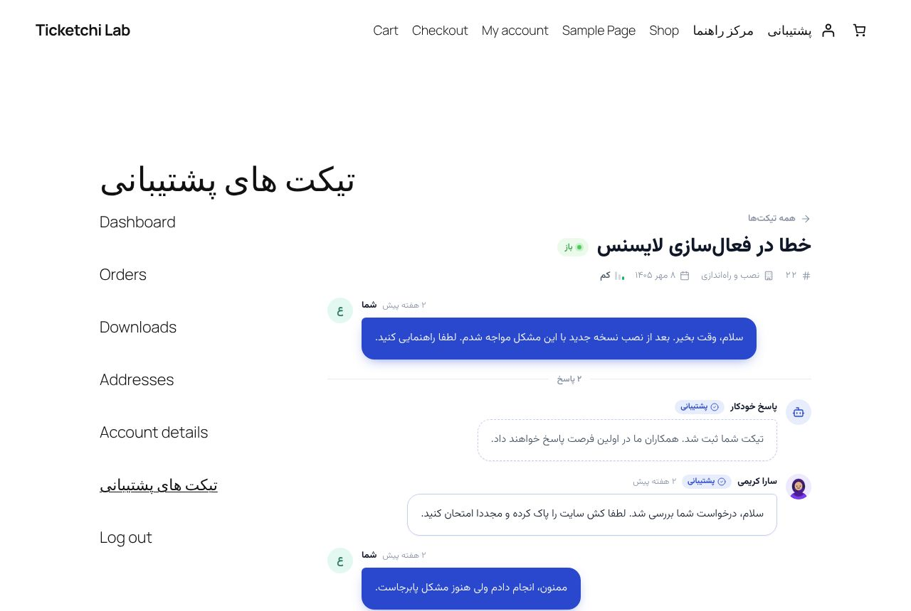
۱۷شورتکدها
| شورتکد | کاربرد |
|---|---|
[tickets] | پنل کامل تیکت مشتری (فهرست، ثبت تیکت، گفتگو). در ووکامرس بهطور خودکار در «حساب کاربری» هم وجود دارد. |
[ticketchi_kb] | مرکز راهنما با جستجو و دستهبندی مقالههای پایگاه دانش. |
شورتکد را در ویرایشگر برگه (بلوک «کد کوتاه» در گوتنبرگ یا ابزارک متن در المنتور) قرار دهید.
۱۸سوالات متداول و رفع مشکل
کارشناس پشتیبانی نمیتواند وارد پنل شود.
مطمئن شوید نقش کاربر «کارشناس پشتیبانی» است یا در یکی از دپارتمانها بهعنوان کارشناس پاسخگو انتخاب شده است. پس از ورود، کارشناس مستقیم به صندوق پشتیبانی هدایت میشود.
کارشناس همه تیکتها را نمیبیند.
بهطور پیشفرض هر کارشناس فقط تیکتهای دپارتمانهای خودش و تیکتهای سپردهشده به خودش را میبیند. برای تغییر، در تنظیمات › تیم و تخصیص گزینه «همه تیکتها» را انتخاب کنید.
ایمیلها ارسال نمیشوند یا به اسپم میروند.
بسیاری از هاستها ارسال ایمیل با تابع پیشفرض PHP را محدود میکنند. یک افزونه SMTP نصب کنید و ایمیل فرستنده را در تنظیمات › اعلانها روی همان ایمیل SMTP قرار دهید.
هشدارهای SLA، قانونهای زمانی یا بستن خودکار اجرا نمیشوند.
این کارها با زمانبند وردپرس (WP-Cron) انجام میشوند که فقط با بازدید از سایت اجرا میشود. در سایتهای کمبازدید، یا اگر DISABLE_WP_CRON فعال است، از پنل هاست یک Cron Job برای فراخوانی wp-cron.php هر ۵ تا ۱۵ دقیقه تنظیم کنید.
فایل آپلود نمیشود.
پسوند فایل باید در فهرست تنظیمات › پیوست فایل باشد و حجم آن از حد مجاز کمتر باشد. حد آپلود هاست (upload_max_filesize) هم نباید از مقدار تنظیمشده کمتر باشد.
پیام صوتی ضبط نمیشود.
ضبط صدا فقط روی سایتهای HTTPS و پس از اجازه دادن مرورگر به میکروفون کار میکند.
ظاهر پنل مشتری با قالب سایت تداخل دارد.
تیکتچی طوری طراحی شده که دکمهها و فرمهایش در برابر استایل قالبها مقاوم باشند. اگر باز هم مشکلی دیدید، کش افزونههای بهینهسازی (مثل LiteSpeed یا WP Rocket) را پاک کنید. اگر مشکل ادامه داشت، با تصویر صفحه به پشتیبانی پیام دهید.
صفحه مقاله پایگاه دانش «یافت نشد» میدهد.
به تنظیمات › پیوندهای یکتا وردپرس بروید و یک بار «ذخیره تغییرات» را بزنید.
رنگ برند در سایت تغییر نمیکند.
پس از ذخیره تنظیمات، کش مرورگر و کش افزونههای بهینهسازی را پاک کنید.
آیا با ارتقا اطلاعاتم از بین میرود؟
خیر. همه تیکتها، پاسخها، دپارتمانها و تنظیمات حفظ میشوند و پایگاه داده خودکار بهروزرسانی میشود. با این حال گرفتن نسخه پشتیبان پیش از هر ارتقا توصیه میشود.
سوالتان اینجا نبود؟ از طریق صفحه محصول در راستچین با پشتیبانی تیکتچی در تماس باشید.
تیکتچی · نسخه ۲.۱.۰ · طاها کرمی